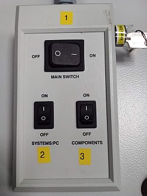
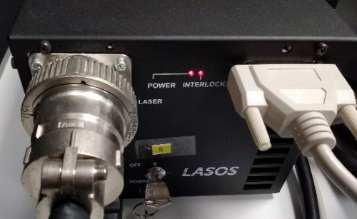
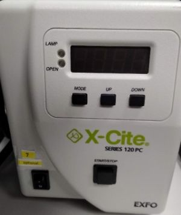
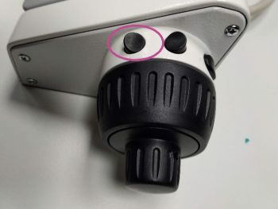
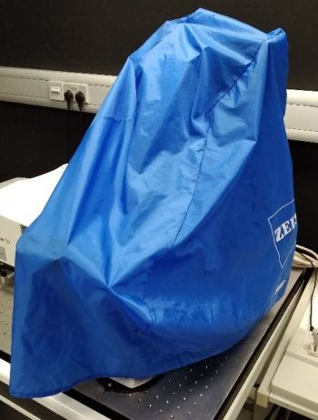

Switching On:
1. Turn on the “LASER IN USE” switch on the wall.

2. Follow the order of the labelled switches from 1 to 3, number 4 is the PC. The Argon ion laser (switches 5 and 6) is needed for laser lines 458 nm, 488 nm and 514 nm. Do not switch it on if you do not intend to use any of those lines. The epifluorescence lamp 7 is only for observing fluorescence by the eyepiece. Do not turn it on if you do not intend to use it.
  3. Log in as User and start ZEN Black Edition software.
| Notes on the epifluorescence lamp: |
|
| Notes on the Argon ion laser: |
|
Switching Off:
1. Make sure you have saved your data and turn off ZEN software.
2. Move the objective to the escape position and remove your sample.
3. If you have used an immersion objective, wipe it clean. Use the lens cleaning tissue. For cleaning oil immersion, moisten the tissue at the solvent dispenser. Always wipe the objective only once, in one direction. If this is not sufficient, repeat with a new piece of tissue. Never reuse the tissue.


4. Shut down the computer.
5. Turn off the numbered switches in the reverse order, starting from 7 or 6. Important: After turning off the Argon ion laser key 5, wait for a few minutes until the laser fan has stopped (audible) before proceeding to the switches 3 – 1.
6. Cover the microscope with the dust cover.
7. Turn off the “LASER IN USE” switch on the wall.
8. Make sure you leave the microscope room clean. Spray with 70% ethanol and wipe any surfaces that could have been in contact with biological material. Do not leave any samples or any other belongings behind.